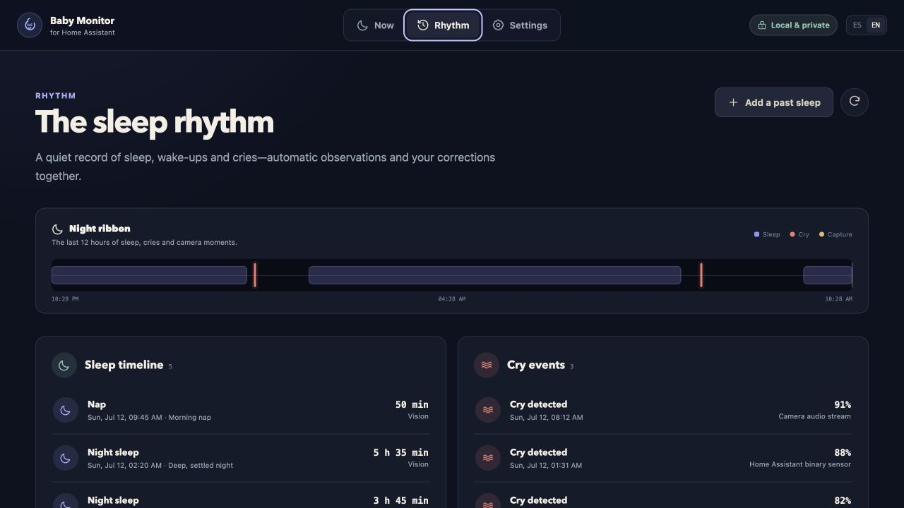

照顧記錄 · C-02
Baby Monitor for Home Assistant · Rhythm 原作桌面視窗
固定提交 9a3b9a86 · README 標 release 0.1.0 · 實際截圖 runtime／拍攝時間未證 · 未入選
相關參考 · 睡眠／哭聲節律；分開單列：桌面睡眠／哭聲節律；C-01 是全照顧時間線，不是同頁。
封存來源：reference12 · aef3f516；原圖未改

Copyright (c) 2026 Victoriano Izquierdo。MIT。原始 JPEG 未修改，底部原有截斷保留；未裁切、翻譯或重畫。圖上控制不可操作。
來源、版本、授權與限制（原封存說明）
原圖底部事件行本已截斷。此處完整保留 1280 × 720 原始視窗，沒有新增裁切；不是整個可捲動 Rhythm 頁面，不補畫或推定畫面以外的內容。
同版官方 README 第 29–30 行明確說明截圖採合成示例，不含真實兒童、攝像頭或 Home Assistant 憑證。這是本圖的具體合成證據，不是只因圖片公開或名稱普通便推定；沒有加入任何實際家庭資料。
原圖在 2026-07-12 的固定提交加入；提交時間不等於獨立證實的拍攝時間，README release 0.1.0 也不證實 capture build。MIT 倉庫隨附文件依據不是獨立圖片特許、品牌背書或未來整套實作獲權。只供來源參考，不代表現行 runtime、即時監測或醫療建議。
已保留原包作者期「未驗 browser」說明及後續獨立桌面展示的有界證據；本版 C-02 入口、原圖顯示及瀏覽器返回亦已核對。未執行上游安裝／遷移指示，未連接 Home Assistant、攝像頭、模型或帳戶。C-01、原版及既有選擇不變。